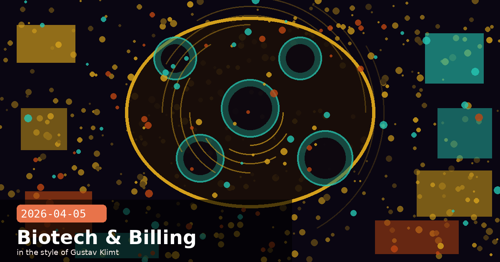

Third-Party Billing Wall, Coefficient Bio & Two API Deadlines

🧭 Anthropic Ends Subscription Coverage for Third-Party Harnesses, Starting With OpenClaw
Starting at noon Pacific on April 4, 2026, Anthropic announced that Claude subscription holders — Pro, Max, and Claude Code — can no longer use their subscription limits when accessing Claude through third-party harnesses. The policy launched with OpenClaw, a popular open-source Claude desktop client, and Anthropic confirmed it will be extended to all third-party harnesses “shortly.” Users of affected tools who want to continue will pay via a pay-as-you-go option billed separately from their subscription.
Boris Cherny, Anthropic’s head of Claude Code, explained the reasoning directly: Claude’s subscriptions “weren’t built for the usage patterns of these third-party tools.” Anthropic’s own products are engineered for high prompt-cache hit rates, reusing cached context aggressively to process tokens efficiently. Third-party harnesses largely bypass that caching layer, placing disproportionate compute load on Anthropic’s infrastructure relative to what the flat-fee subscription model anticipated.
What changes for users
OpenClaw users: Claude subscription limits no longer apply when accessing Claude via OpenClaw; API-style usage billing kicks in instead
Affected users: Anthropic is offering refunds and equivalent API usage credits to ease the transition
Scope: The policy targets “all third-party harnesses” — not just OpenClaw; rollout to other tools will follow
OpenClaw’s future: Creator Peter Steinberger is joining OpenAI; OpenClaw is continuing as an open-source project with OpenAI support, pivoting to OpenAI’s models as its primary backend
If you build on top of Claude’s subscription tiers
This policy shift draws a clear line between Anthropic’s first-party products and any third-party tool that wraps the same Claude subscription. If your product routes user-owned subscription limits through your own harness, expect this policy to apply to you too. The cleaner path is to build on the API directly and pass costs transparently to users, rather than assuming a shared subscription pool. Anthropic’s billing architecture increasingly rewards cache-efficient, first-party access patterns.
🧭 Anthropic Acquires Coefficient Bio in $400M Stock Deal, Deepening Life Sciences Push
Anthropic has purchased Coefficient Bio, a stealth-mode biotech AI startup, in a $400 million all-stock transaction, according to reporting by The Information and journalist Eric Newcomer. The acquisition is Anthropic’s most significant foray yet into applied life sciences, following the October 2025 launch of Claude for Life Sciences — a Claude variant trained on biomedical literature and optimised for drug discovery, genomics, and clinical trial design workflows.
Coefficient Bio was operating in stealth and has disclosed little publicly about its specific technology focus, but industry analysts note that AI-native biotech startups in its category typically work on one of three problems: accelerating molecular simulation, automating the interpretation of high-throughput experiment outputs, or building foundation models that reason over protein-sequence and chemical-structure data. Acquiring a team already deep in this domain gives Anthropic a significant head start over hiring into it from scratch.
What this signals about Anthropic’s strategy
Vertical depth: Rather than providing Claude as a horizontal API for biotech customers to prompt-engineer, Anthropic is building domain-specific product layers with bespoke training and tooling
Talent play: Stealth biotech AI startups are among the hardest places to hire from; acquisitions are often primarily talent transactions
Revenue diversification: Life sciences contracts — particularly with pharma majors and clinical research organisations — tend to be large, multi-year agreements, which smooth the consumer subscription revenue cycle
Competitive positioning: Google DeepMind and OpenAI both have active life sciences programmes; Anthropic’s acquisition signals it intends to compete directly rather than cede that vertical
Implications for life sciences developers using the Claude API today
If you are building on Claude for Life Sciences workloads, expect increased investment in domain-specific capabilities in this product line. Claude for Life Sciences already has access to extended medical corpus training; expect Coefficient Bio’s expertise to accelerate tooling around structured biological data formats (SMILES strings, FASTA sequences, clinical trial schema), code execution integration for scientific computing (NumPy, SciPy, BioPython), and potentially bespoke fine-tuned model variants for regulated research environments.
🧭 Two API Deadlines in the Next Four Weeks: Haiku 3 Retires April 19, 1M Context Beta Ends April 30
Two separate Anthropic deprecation clocks are ticking simultaneously. If your production code calls either claude-3-haiku-20240307 or uses the context-1m-2025-08-07 beta header on older Sonnet models, you have less than four weeks to act. Missing either deadline means hard errors in production.
Deadline 1 — Claude Haiku 3 retires April 19, 2026
Claude Haiku 3 (claude-3-haiku-20240307) reaches end of life on April 19, 2026. After that date, any request to this model ID will return an error. The recommended migration path is to Claude Haiku 4.5 (claude-haiku-4-5-20251001), which delivers substantially better reasoning, faster throughput, and lower per-token costs for the same latency-sensitive use cases that made Haiku 3 popular.
Who is affected: Any code that hard-codes claude-3-haiku-20240307 as a model string — check routing code, fallback logic, and batch job configs
Migration effort: Low — Haiku 4.5 is a drop-in replacement; most prompts perform at least as well without modification
Deadline 2 — 1M token context beta header stops working April 30, 2026
The context-1m-2025-08-07 beta header will have no effect on Claude Sonnet 4.5 and Claude Sonnet 4 after April 30, 2026. Requests exceeding the standard 200k-token context window on those models will return an error. To retain 1M-token context support, migrate to Claude Sonnet 4.6 or Claude Opus 4.6 — both support the full 1M token window at standard pricing with no beta header required.
Who is affected: Any code sending the context-1m-2025-08-07 header with Sonnet 4.5 or Sonnet 4 model IDs
Migration effort: Low to medium — update the model ID and remove the beta header; review whether your long-context prompts benefit from Sonnet 4.6’s improved long-context reasoning
Rate limits: The dedicated 1M-token rate limits have already been removed; standard account limits now apply at all context lengths on 4.6 and Opus 4.6
Audit your model IDs now
Run a quick search across your codebase and infrastructure configs for these three strings: claude-3-haiku-20240307, claude-sonnet-4-5 (if paired with the 1M header), and context-1m-2025-08-07. Then check your batch job definitions, Lambda environment variables, and any third-party integration configs that may reference model IDs outside your primary codebase. A five-minute audit now beats a 3am production incident on April 19.
# Quick audit — find affected model references in your project
grep -r "claude-3-haiku-20240307" .
grep -r "context-1m-2025-08-07" .
# Recommended replacements:
# claude-3-haiku-20240307 → claude-haiku-4-5-20251001
# 1M context on Sonnet 4.5 → claude-sonnet-4-6-20260131 (no beta header needed)